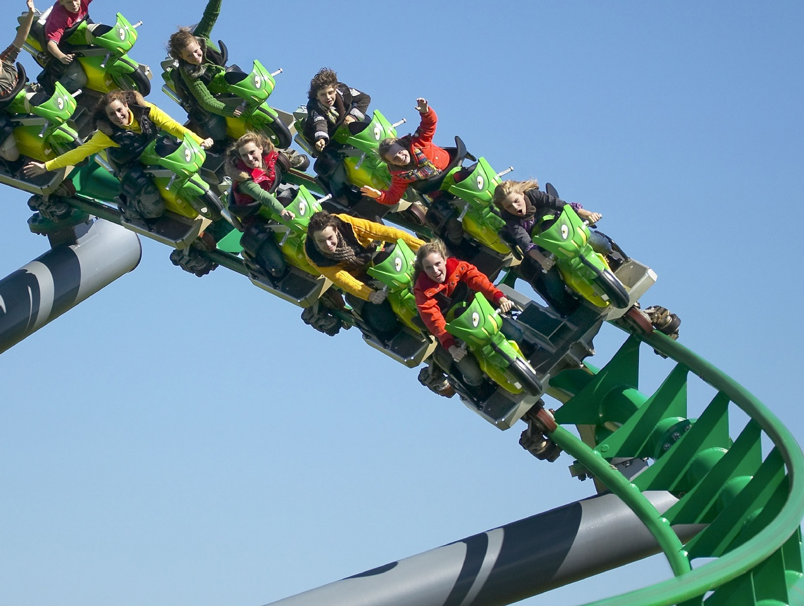
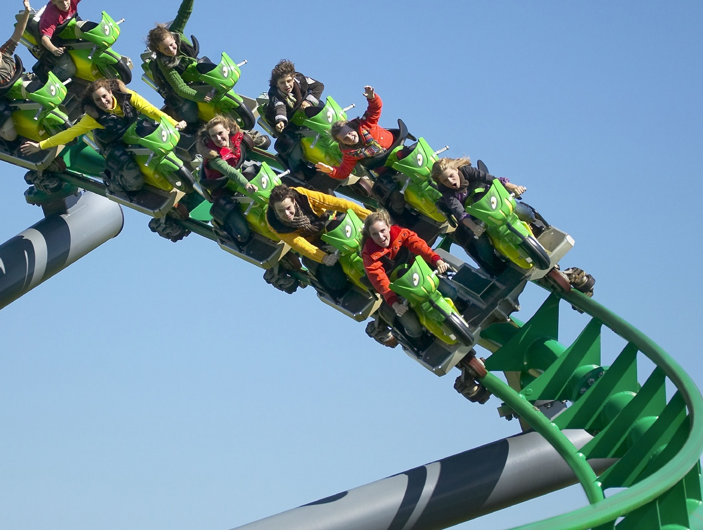
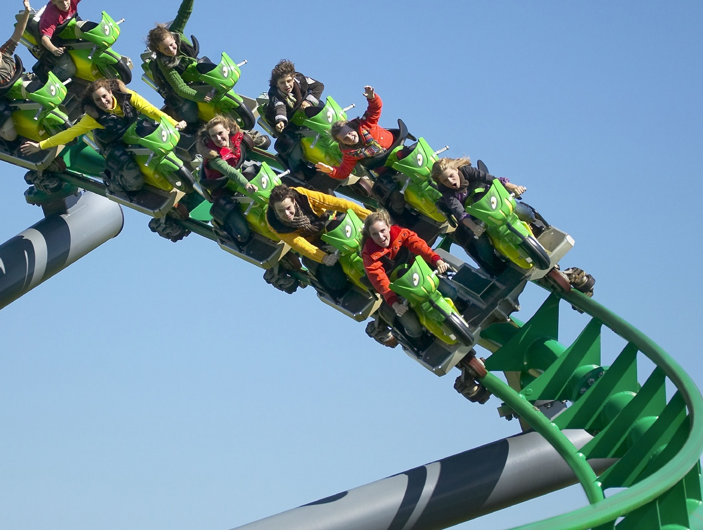

Toverland verwelkomde haar eerste bezoekers op 19 mei 2001. In de tussentijd heeft ons attractiepark een indrukwekkende omvang van meer dan 25 hectare bereikt en is het de afgelopen jaren uitgegroeid tot een van de grootste themaparken van de Benelux. Je vindt in Toverland anno 2024 meer dan 40 attracties en shows. Een bijzonder hoogtepunt in de geschiedenis van het park vond plaats in 2022, toen we voor de eerste keer in onze geschiedenis meer dan 1.000.000 bezoekers mochten verwelkomen. Een mijlpaal waar we bijzonder trots op zijn! En ook daarna zet de bezoekersgroei gestaag door.
